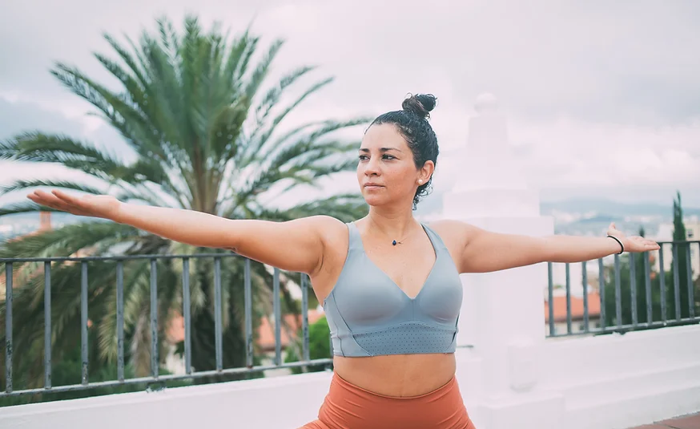

Instituto de Biomecánica del Yoga
Descubre nuevas fronteras
Aprende una nueva forma de practicar y enseñar yogaNuestro equipo
Te presentamos a los fundadores del proyecto:

Creadora de contenido. Gestora de redes.
Elena Fernández
Responsable del diseño, organización y estructura de nuestros contenidos. Especialista en redes y relaciones públicas

Director. Profesor
Ariel de Gatica
Más de 10 años de experiencia impartiendo yoga. Especialista en Vinyasa y Restaurativo. Licenciado en fisioterapia.

Jefa de estudios. Profesora
Maialén Rodríguez
Profesora, tutora y representante de los alumnos del instituto. Especialista en Hatha.
Nuestra filosofía
El Instituto de Biomecánica del Yoga se fundó en la creencia de que el yoga debería ser accesible y seguro para todos los practicantes y profesores. A partir del estudio de la anatomía y su implicación en los movimientos, hemos desarrollado un método que analiza la situación física particular de cada individuo para llevar su práctica a otro nivel de manera autónoma. Estamos aquí para proporcionarle la experiencia de aprendizaje flexible que necesita.
Gracias a mi formación en el Instituto de Biomecánica soy consciente de mis movimientos y mis limitaciones. Realizo mi práctica y mis clases con respeto hacia mi cuerpo y a los de mis alumnos. No he vuelto a terminar una práctica con dolor o inseguridad a la hora de enseñar algo nuevo.
- Rocío Jiménez Martos
Aluma de la 2ª edición de la EBY
Redes sociales
Síguenos para estar al día de las últimas novedades